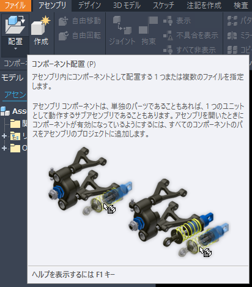
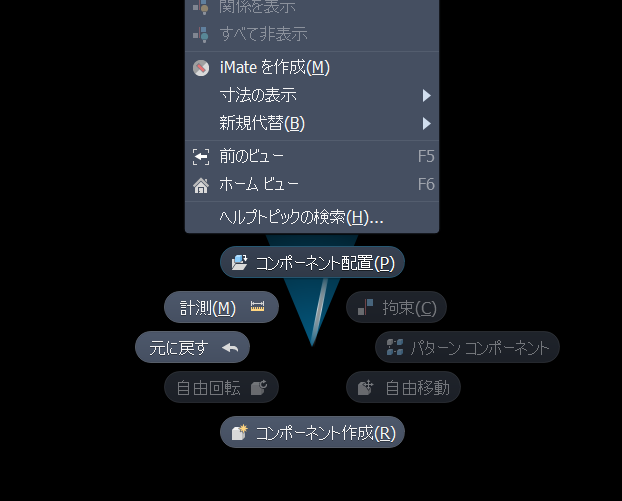
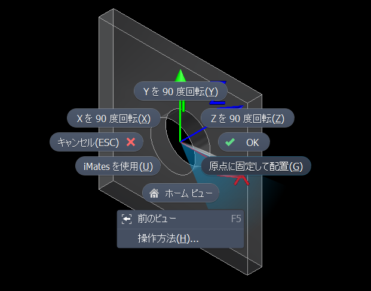

- 初心者講座では初めてInventorを使って3D図面を書く時のとっかかりとしてアセンブリ（組立）を作成する手順を紹介します。
初心者講座 - パーツの配置
７．パーツの配置
フィーチャなどでパーツを作成したらそれをアセンブリに配置します。
- １．アセンブリを新規作成するか、既存のファイルを開き
[アセンブリ][配置]をクリック。

他のやり方 - 1
ショートカットPを押す。
※ショートカットの一覧は こちら
他のやり方 - 2
グラフィックス ウィンドウの任意の位置を右クリックして[コンポーネント配置]をクリック。
 -
２．配置するファイルをダブルクリック（2つ以上配置する時はキーボードのShift（範囲選択）かCtrl（複数選択）を押しながらファイルを選択してキーボードのリターンを押すか[開く]をクリックしてグラフィックス ウィンドウの任意の位置をクリック。
※最初に配置するパーツは右クリックして[原点に固定して配置]をクリックすると原点に固定されます。
※[アプリケーションオプション][アセンブリ]タブで[最初のコンポーネントを原点に配置して固定]をオンで最初のパーツは自動的に原点に配置され固定されます。
 - ３．[アセンブリ][関係][ジョイント]や[拘束]で配置したパーツを組み立てていきます。
※ジョイントの詳細はこちら。
※拘束の詳細はこちら。